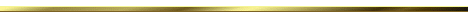

Fernando Tanajura Menezes 
Ela pinta e borda. Outros talvez digam que ela toca sete instrumentos. Pinta, sim, com seus pincéis e suas tintas em telas, que depois de trabalhadas, viram joias para o nosso regalo. Toca os instrumentos também e, com esse ato, nos enleva a outro plano para conforto do nosso espírito. E o bordado? Ah, é desse talento que eu quero falar. Não é um bordado com agulha e linha em tecidos e sim com palavras em doces sentimentos e em forma de poesia. Maria Thereza Neves é uma artista da palavra e sabe usá-la, mesmo quando desdiz com muita ênfase: “Ah! se minhas mãos soubessem escrever!/se soubessem desenhar todas as letras/exclamar entre vírgulas e pontos/se soubessem da minha fome de palavras sentidas/rimando poesias!”
Quando TT, como assim gosta de assinar suas mensagens sempre positivas, me convidou para escrever a apresentação deste conjunto de belíssimos poemas, senti o peso da responsabilidade nos ombros. Como apresentar uma artista de tamanha envergadura? Sugeri-lhe fazer alguma coisa juntos, coisa que ela se negou terminantemente ao me escrever: “desejo a sua verdade, o seu sentir”. Preferi, então me ater em alguns dos seus poemas que mais me tocam e que, certamente, atingirá o leitor no âmago de sua alma. Destarte, me peguei lendo: “mágoas/não escrevo” [in pelo caminho]. Animei-me logo em reler tantos poemas, os quais já conhecia, procurando desvendar mais o mundo e o pensamento dessa querida artista. Segui seus versos nessa jornada para descobrir seus segredos enquanto lia: “depois do vidro da janela/do vento, da aquarela/faço poesia/por vontade, desejo ou fantasia” [in depois do vidro da janela]. Seria só isso que a poeta queria escrever? Acho que não, pois, em seguida, leio-a reafirmando: “gravar o tempo/retratar o momento/escrevendo, pintando o teto do mundo”[in Nesta Noite].
O universo de Maria Thereza é vasto e infinito, e se espalha muito além “do vidro da janela”. Ela mesma afirma com seus versos: “na arte do instinto/expressando sentimentos humanos/utilizando cores patéticas/dando forma ao amor/ao ciúme,/ao medo,/à solidão,/à miséria humana,/à prostituição” [in Nesta Noite]. Assim ela explora todas as formas de se comunicar em versos, rimados ou não, metrificados ou simplesmente livres como seu pensamento, e entra em desespero quando isso parece difícil: “Meus ouvidos não mais suportam a ausência da minha voz.../Minhas mãos endurecem porque não recebem mais imagens pra pintar...” [in Minha Alma Dói]. Contudo, esse desespero logo é anulado, ou milhões de vertentes se alargam na longa e bela prosa poética “20 Minutos de Mãos Vazias”. Ela se contradiz para o nosso deleite, pois é aí que a sua escrita se enriquece e cresce. Os vinte minutos, na verdade, é uma eternidade, é uma vida inteira. As mãos de nada estão vazias, e sim cheias de imagens simples do nosso quotidiano. As questões useiras pululam sem pontuação em sua mente e ela, sabiamente, transmite para o leitor: “Puxa... como é difícil escrever quando milhões de ideias/ borbulham e ao mesmo tempo ter paciência para/desenhar cada letra para compor uma simples palavra???”. Nessa multidão de ideias ela se solta sem medo de se perder. Ela tem toda a segurança por onde pisa e sabe que o reencontro é certo: “Porque quando me perco pelo mundo é/maravilhoso me encontrar novamente. Fico satisfeita e transbordo de/felicidade. É um reencontro constante, um se/ conhecer que se aprimora, um mergulhar pra dentro e um reconhecer/da nossa infinita capacidade de criação”. Para no final concluir que “As mão se enchem, o coração se abre, as ideias florescem... E os personagens voltam” [in 20 Minutos de Mãos Vazias...], se firmando assim, sem a menor dúvida, como uma forte voz na Poesia Brasileira Contemporânea.
Assim Maria Thereza Neves, com seus bordados de palavras, canta o amor, protesta a desigualdade social, denuncia os acomodados, acalenta os carentes de sossego, conforta os desesperados, alerta para necessidade de agir, regozija o Amor e, sobretudo, celebra a VIDA.
A leitura deste buquê de poemas é um banquete para o leitor que, no final, será o grande ganhador deste mimo — uma verdadeira celebração da palavra e da poesia.
Fernando Tanajura Menezes